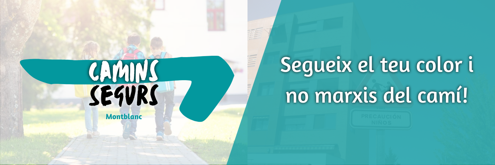
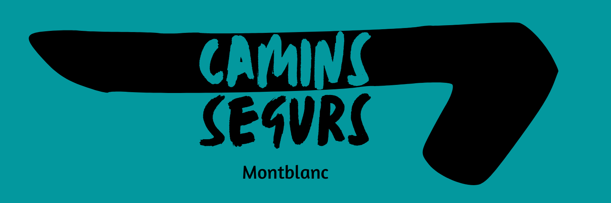
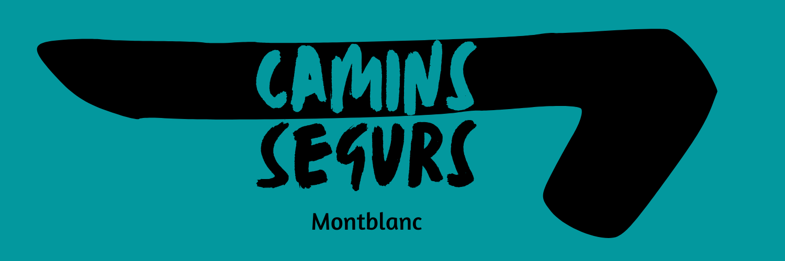

Vosté es troba a la pàgina del camí blau marí (ruta 6)
Què és?
- Camins Segurs és un projecte fictici creat a l’assignatura de Producció, disseny cartogràfic i eines web del grau en Geografia, Anàlisi territorial i Sostenibilitat de la Universitat Rovira i Virgili.
Aquest projecte té dues finalitats:
- 1a. La creació d’una pàgina web. La primera de les finalitats és crear una pàgina web amb els codis html (HyperText Markup Language), ccs (Cascading Style Sheets) i js (Java Script) treballats a l'assignatura.
- 2a. Exposició pública dels diferents Camins Segurs. Els visitants de la pàgina web podran conèixer els diferents recorreguts que connecten els centres educatius de Montblanc amb els equipaments esportius, culturals i altres centres formatius on els nens i les nenes duen a terme les seves activitats extraescolars. Amb l’objectiu de crear recorreguts on coincideixin amb altres nens i nenes, es redueixi l’ús dels vehicles privats, s’introdueixin al món de l’orientació i utilitzin camins millor condicionats.
RECORREGUTS COMUNS
Establir una sèrie de vies on els nens i nenes millorin la seva convivència.
REDUCCIÓ DE L'ÚS DEL VEHICLE PRIVAT
Posseir de carrers i avingudes que garanteixin la comoditat dels vianants i així augmentar el percentatge de persones que es desplacen a peu a l'escola. I acabar també amb un problema de mobilitat com són les hores punta a les entrades de les escoles.
INTRODUCCIÓ A L'ÀMBIT DE L'ORIENTACIÓ
A través dels camins de diferents colors es crea una dinàmica socioeducativa que pugui fer desenvolupar les intel·ligències visual-espacial, cinestèsica-corporal i interpersonal.
MILLORS CONDICIONS DE LES VIES D'ÚS I ACCÉS ESCOLAR
Sintetitzar els recorreguts cap a l'escola i als espais on fan activitats extraescolars de manera que l'administració tingui vies prioritàries on fer les millores a la via pública. Considero més necessari tenir pocs carrers amb un estat excel·lent i amb factors que garanteixin la seguretat dels vianants vulnerables, com són els infants, que fer millores transversals i cap via asseguri la totalitat de la seguretat.
REGISTRE DE INCIDÈNCIES
A més, la pàgina web recopilarà les incidències per tal que l'administració pública pugui fer-ne les millores i els infants sàpiguen com han d'actuar davant de cada perill.
Montblanc
Actualment, Montblanc és la capital de la Conca de Barberà i té 7.410 habitants, segons dades de l’Institut Cartogràfic de Catalunya a dia 1 de gener de 2022. És el centre comercial, industrial i de serveis de la comarca i la localitat més dinàmica. S'ha convertit en un dels punts de l'interior de la Costa Daurada amb més interès des del punt de vista turístic i una de les parades obligades de la Ruta del Cister. Presenta un ventall ampli d'atractius: monumentals, naturals, gastronòmics, artesanals, de productes agroalimentaris i d'esdeveniments d'interès.

Altres logotips!

 

© Copyright Camins segurs - Montblanc.
Pàgina Oficial d'autoria d'Eduard Molné Pulido, maig del 2023
Pàgina Oficial d'autoria d'Eduard Molné Pulido, maig del 2023